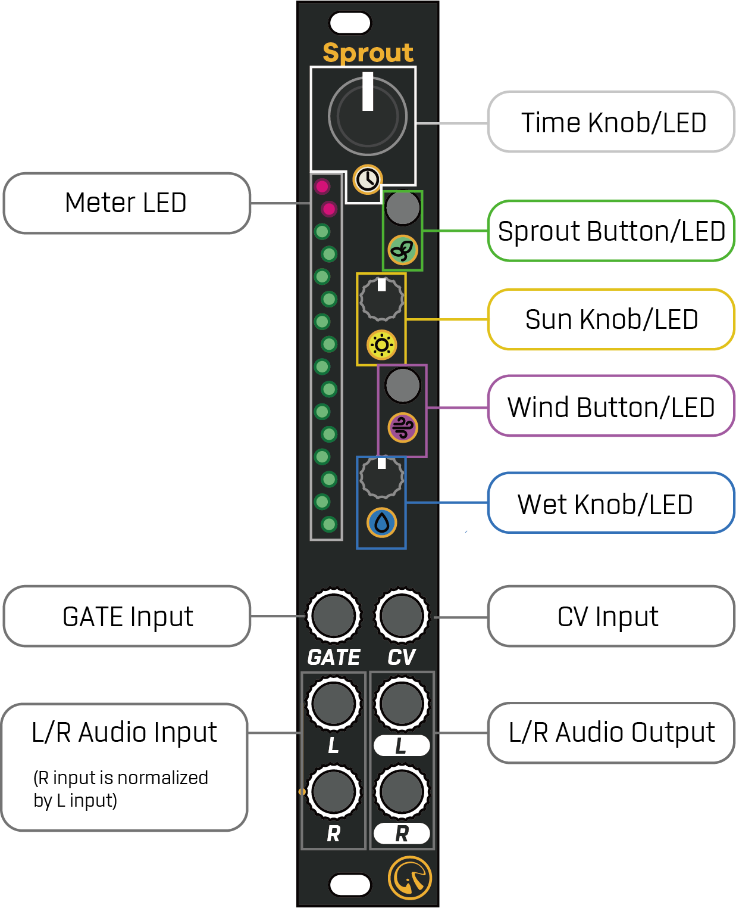
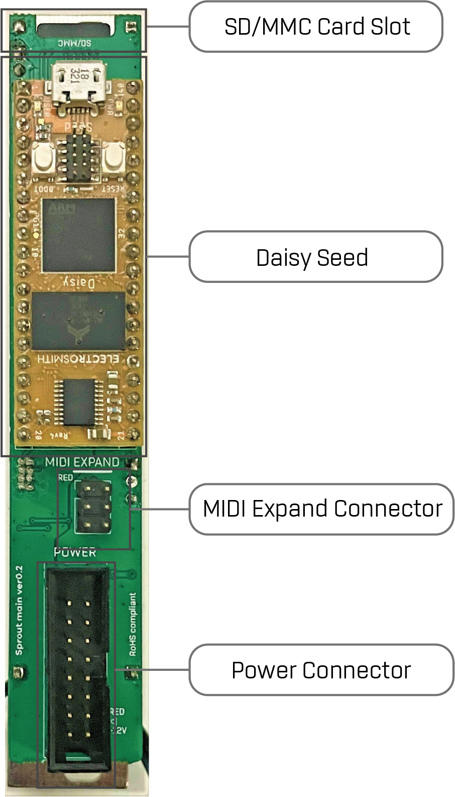
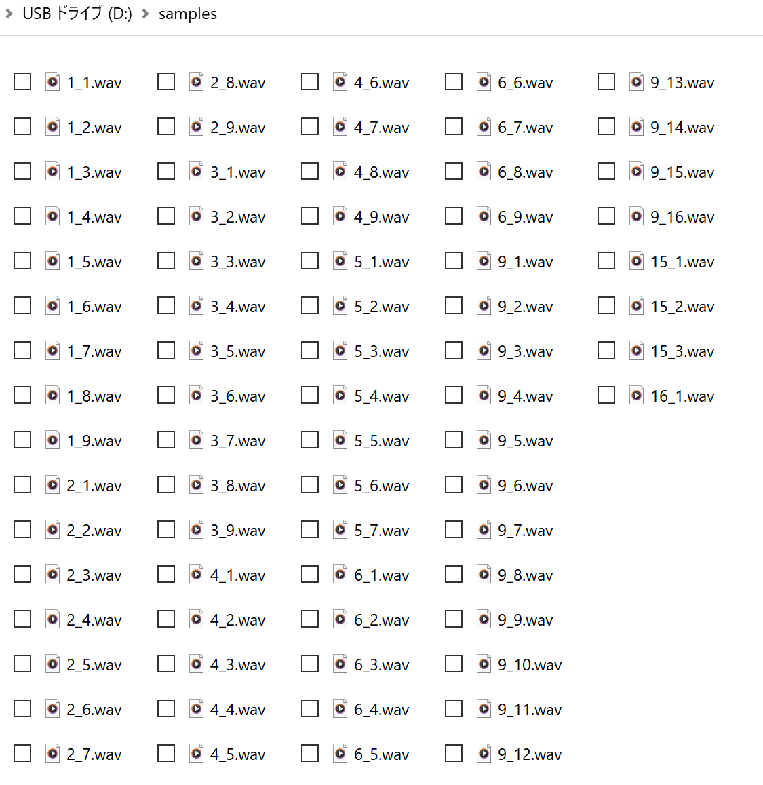

1. Introduction
Sprout は"Electro-Smith Daisy Seed”をコアとする高解像度 (96kHz/24bit) のマルチエフェクトプロセッサーです。
プリセットで以下のエフェクトが利用できます。
- Tape Echo (テープのよれまで再現したテープエミュレーションディレイ)
- Modern Delay (最大10秒のディレイタイム。ピッチシフトや逆再生が可能)
- FDN Reverb (反響音のピッチシフト (いわゆるシマー）が可能)
ver 2.0:
- Repeater (入力された音を記録し、範囲を指定してリピートするエフェクト)
- Sampler (16x16のスロットにサンプルを配置し、Gate入力時に再生)
さらに、独自のカスタムエフェクトを作成してアップロードすることが可能です。
詳細はGitHubのプロジェクトページを参照してください: https://github.com/centrevillage/SproutExample
2. Hardware Interface


3. Factory Program
出荷時プログラムでは下記の5つのエフェクトが利用できます。:
- Tape Echo
- Modern Delay
- FDN Reverb
- Repeater (ver 2.0)
- Sampler (ver 2.0)
それぞれの操作子/表示器/入出力は以下の機能を持っています:
| Name | Description |
|---|---|
| Time Knob/LED | 時間に関するパラメータを設定します。 LEDの輝度で現在のパラメータ値が表示されます。 Wind ボタンを押しながら操作することでセカンダリパラメータにアクセスできます。 |
| Sun Knob/LED | フィードバックに関するパラメータを設定します。 LEDの輝度で現在のパラメータ値が表示されます。 Wind ボタンを押しながら操作することでセカンダリパラメータにアクセスできます |
| Wet Knob/LED | Dry/Wet バランスを設定します。 LEDの輝度で現在のパラメータ値が表示されます。 Wind ボタンを押しながら操作することでセカンダリパラメータにアクセスできます。 |
| Sprout Button/LED | 現在のエフェクト種類を変更します。 LEDの色で現在のエフェクトを表示。 |
| Wind Button/LED | タップテンポ。 このボタンを押しながらノブを操作することでセカンダリパラメータにアクセスできます。 |
| Meter LED | 出力レベルをdBメータとして表示します。 メーターの色は、ピーク位置以外は現在のエフェクトに応じて変化します。 |
| Gate Input | クロック同期入力。 クロックパルスが入力されると、時間に関係するパラメータが同期されます。 入力が2秒以上ない場合、自動的に同期がオフになります。 * FDN Reverb では無効になります |
| CV input | Timeパラメータのモジュレーション |
| L/R Audio Input | L/R オーディオ入力 |
| L/R Audio Output | L/R オーディオ出力 |
3.1. Tape Echo
現在のエフェクトが Tape Echo のとき、Sprout LED が緑色に点灯します。
次のパラメータがあります:
| Operation | Name | Description |
|---|---|---|
| Time | Delay Time | ディレイタイム（20ミリ秒 から 1秒まで) |
| Sun | Feedback | フィードバック率 (最大 110%) |
| Wet | Dry/Wet | Dry (direct signal) / Wet (effect signal) バランス。 一番左の位置ではDry=100%、Wet=0%。 中間の位置でDry=100%、Wet=100%。 一番右の位置でDry=0%、Wet=100%。 |
| Wind + Time | Tone | フィードバックトーンとサチュレーション。 左側: 暗いサチュレーションサウンド 中間: 明瞭なサウンド 右側: 明るいサチュレーションサウンド |
| Wind + Sun | Flutter | フラッター効果のエミュレーション。 値が大きいほどピッチが不安定になります。 |
| Wind + Wet | Spread | ダブルトラッキング効果をもとにしたステレオエフェクト。 同時にPing Pong効果によりフィードバック音が左右に分散します。 |
3.2. Modern Delay
現在のエフェクトが Modern Delay のとき、 Sprout LED が青色に点灯します。
次のパラメータがあります:
| Operation | Name | Description |
|---|---|---|
| Time | Delay Time | ディレイタイム（20ミリ秒 から 10秒まで) |
| Sun | Feedback | フィードバック率 (最大 110%) |
| Wet | Dry/Wet | Dry (direct signal) / Wet (effect signal) バランス。 一番左の位置ではDry=100%、Wet=0%。 中間の位置でDry=100%、Wet=100%。 一番右の位置でDry=0%、Wet=100%。 |
| Wind + Time | Tone | フィードバックトーン。 左側: 暗いサウンド 中間: 明瞭なサウンド 右側: 明るいサウンド |
| Wind + Sun | Pitch Shift | フィードバック音のピッチシフト量。 左側: -1 から -12 半音のピッチシフト 中間: +0 ピッチシフトなし 右側: +1 から +12 半音のピッチシフト |
| Wind + Wet | Reverse | フィードバック音の逆再生。 左側: 逆再生 右側: 正再生 |
3.3. FDN Reverb
現在のエフェクトが FDN* Reverb のとき、 Sprout LED が黄色に点灯します。
* FDN = Feedback Delay Network
次のパラメータがあります:
| Operation | Name | Description |
|---|---|---|
| Time | Size | ルームサイズ。 値が大きいほど、残響音がまばらになり、よりディレイエフェクトに近くなります。 |
| Sun | Decay | 値が大きいほど、残響音の減衰時間が長くなります。 |
| Wet | Dry/Wet | Dry (direct signal) / Wet (effect signal) バランス。 一番左の位置ではDry=100%、Wet=0%。 中間の位置でDry=100%、Wet=100%。 一番右の位置でDry=0%、Wet=100%。 |
| Wind + Time | Tone | 残響音のトーン。 左側: 暗いサウンド 中間: 明瞭なサウンド 右側: 明るいサウンド |
| Wind + Sun | Pitch Shift | 残響音のピッチシフト。 (いわゆるシマー) 左側: -1 から -12 半音のピッチシフト 中間: +0 ピッチシフトなし 右側: +1 から +12 半音のピッチシフト |
| Wind + Wet | Diffusion | 残響音の拡散量。 値が大きいほど、残響音が空間中に拡散します。 |
3.4. Repeater (ver 2.0)
現在のエフェクトが Repeater のとき、 Sprout LED が水色に点灯します。
このエフェクトを利用するときは、GATE Input に同期用のクロック信号を入力してください。
Repeater エフェクトには Listen と Play の二つの状態があります。
初期は Listen 状態になっています。
Listen 状態のとき、入力されたオーディオ信号は最大16ステップ分の長さで記録され続けます。
また、入力オーディオ信号がそのまま出力されます。
Play 状態のときは Listen 状態の時に記録したオーディオを再生します。
Wind Button を押すと、 Listen と Play の状態が相互に切り替わります。
現在の状態は、Meter LED の点灯状態で把握することができます。
Listen 状態のときは再生範囲を表す色が青か紫色(逆再生時)です。
Play 状態のときは 再生範囲を表す色が緑か赤色(逆再生時)です。
また、再生中のステップ位置が明るく点灯します。
また、以下の操作によって再生するオーディオ位置や速度などを変更することができます:
| Operation | Name | Description |
|---|---|---|
| Time | Speed | 再生速度を変更します。 左側の位置では再生速度が遅くなり、中間の位置で等速、右側の位置では再生速度が速くなります。 再生速度を変えた場合にも常にクロック同期されます。 |
| Sun | Start Position | 再生開始位置を変更します。 |
| Wet | Length | 再生ステップ長さを設定します。 ステップ長さは正負の値が設定可能です。 ノブが右側の位置では正の値が設定可能で、オーディオを順再生します。 ノブが左側の位置では負の値が設定可能でオーディオを逆再生します。 |
| Wind + Sun | Random Start Position | Play 状態での再生開始位置をランダムに移動します。 値が大きいほど、遠くのステップに移動しやすくなります。 |
| Wind + Wet | Dry / Repeat Balance | Play 状態での入力オーディオ信号と再生オーディオ信号の音量バランスを設定します。 一番左の位置ではDry=100%、Repeat=0%。 中間の位置でDry=100%、Repeat=100%。 一番右の位置でDry=0%、Repeat=100%。 |
3.5. Sampler (ver 2.0)
現在のエフェクトが Sampler のとき、 Sprout LED が紫色に点灯します。
このエフェクトを利用する場合は、必ずMicro SD Cardを挿入した状態でモジュールを起動してください。
（SD Cardが挿入されていない場合、または “samples” ディレクトリが存在しない場合はこのエフェクトは選択できません）
SD Cardには16バンク×16スロット（合計256サンプル）のオーディオファイルを配置することができます。
Sampler エフェクトでは、SD Card内に保存したサンプルを、GATE Input にトリガー信号が入力されたタイミングで鳴らすことができます。
また、オーディオ入力信号をリアルタイム録音することも可能です。
オーディオの長さは SD Card の容量のみによって制限されます。
（モジュールのメモリ上の制約はありません）
3.5.1. SD Card Condition
利用可能なMicro SD Cardは以下の条件を満たす必要があります:
- 容量が32GB以下
- アプリケーションパフォーマンスクラスがA2
Micro SD Card の動作確認状況は以下です:
| Name | Confirmation |
|---|---|
| Gigastone 32GB 4K Camera Pro | OK (Write & Read) |
3.5.2. Sample File
SDカードのルートディレクトリ直下に “samples” ディレクトリを作成し、各サンプルファイルを配置します。
ファイル名は以下のフォーマットに従ってください:
「バンク番号(1-16)」_「スロット番号(1-16)」.wav
(例: 1_1.wav, 2_3.wav 等)
wavファイルは44.1/48/96kHzの16/24bitまたは32bit floatのステレオに対応しています。
ただし、waveファイル中のトラック情報などのメタ情報は可能な限り削除してください。
メタ情報があると正常に読み込みができない場合があります。
(Audacity などのツールでwaveファイル中のメタ情報を削除することができます）
録音を行った場合は、自動的に対応するwavファイルがSDカード内に作成されます。
そのときのフォーマットは96kHz&32bit float&ステレオ固定となります。

テスト用のサンプルファイルはこちらにあります:
3.5.3. Operation
Sampler エフェクトには Play と Record の二つのモードがあります。
初期では Play モードになっています。
Wind + Sprout Button を押すことで二つのモードを相互に切り替えることができます。
現在のモードは Sprout LED で点灯状態で判別でき、Playモード中は紫色で常時点灯、Record モード中は紫色で点滅します。
3.5.3.1. Play Mode
バンク選択
Wind + Time Knobでバンクを変更することができます。
バンク毎に Time LED と Meter LED の色が変わります。（赤->緑->青->黄-> ...)
スロット選択
Time Knob でスロットを変更することができます。
選択可能なスロット位置がバンクの色で Meter LED に表示されます。
選択中のスロット位置は明るい色で表示されます。
また、CV入力によっても選択スロットを変更することができます。
サンプル再生
GATE Input にトリガー信号を入力すると、選択スロットのサンプルを再生します。
また、L/R Input にオーディオ信号が入力されている場合は、再生中のサンプルの音声とミックスされた信号が出力されます。
再生速度変更
Sun Knob でサンプルの再生スピードを変更できます。
中間の位置で等速で、左側が減速、右側が加速になります。
サンプル再生音量変更
Wet Knob でサンプル再生音量を変更できます。
テープサチュレーターエフェクト
Wind + Sun Knob でテープサチュレーターエフェクトの量を設定できます。
テープのよれによるフラッター効果と、帯域フィルターの効果を再現します。
最小値でエフェクト0%、最大値で100%です。
リバーブエフェクト
Wind + Wet Knob でリバーブエフェクトの量を設定できます。
このリバーブは FDN Reverb エフェクトのアルゴリズムを単純化したものです。
最小値でエフェクト0%、最大値で100%です。
3.5.3.2. Record Mode
入力オーディオ信号のスルー出力
Play モードと同様に、入力オーディオ信号は録音中かどうかにかかわらず常にオーディオ出力されます。
バンク/スロット選択
Play モードと同様に Wind + Time Knob でバンク選択、Time Knob でスロット選択が可能です。
Play モードと違い、サンプルが存在しないバンクやスロットも選択可能です。
(この場合選択スロット位置の Meter LED が弱めのバンクカラーで点灯します)
録音開始/終了
Sprout Button を押すと録音状態になり、入力されているオーディオ信号を選択スロット位置に録音開始します。
録音中は Sprout LED が赤色に点灯します。
再度Sprout Button を押すと録音終了し、Sprout LEDが紫点滅状態に戻ります。
録音可能な長さは、SDカードの空き容量によって決まります。
また、もう一つの録音開始方法として、Sprout Button を押したままの状態で、 Gate Input にクロック信号を入力することで、クロック信号に同期して録音開始することができます。
この場合も、再度 Sprout Button を押すと録音終了します。
リバーブエフェクト
Play モードと同様に、Wind + Wet Knob でリバーブエフェクトの量を設定できます。
また、録音されるサンプルにもリバーブエフェクトが反映されます。
4. Firmware Update
ファームウェアアップデートには二つの方法があります。
もしマイクロ SDカードをお持ちであれば、簡単にアップデートができます。
もしお持ちでない場合は、USB-DFUを使っての更新も可能です。ただし、別途DFUプログラムを用意する必要があります。
4.1. Update by SD Card
手順:
- ファームウェアのバイナリファイル (“Sprout_factory_v2_0.bin”など) をSDカードのルートディレクトリに配置します。
- ラックの電源を落とします。
- Sproutモジュールをラックから外し、SDカードを挿入します。
- Sproutモジュールをマウントし直します。
- ラックの電源を入れると、自動的にファームウェアアップデートが行われます。
4.2. Update by USB-DFU
はじめに、USB-DFUでのアップデートのために、DFUプログラムを準備する必要があります。
例えば, “dfu-util” (https://dfu-util.sourceforge.net/) や “zadig”(https://zadig.akeo.ie/) 等のプログラムがあります。
手順:
- PCとDaisy SeedをUSBケーブルで接続します。
- Daisy Seed の Reset ボタンを押します。
- ボタンを押してから2.5秒以内にファームウェア(“Sprout_factory_v2_0.bin”など)をDFUプログラムでアップロードします。 (2.5秒間はLEDが点滅状態になります)
5. Warranty
購入より1年間、ユーザーの意図的な改造/破壊による故障、不注意による落下などによる故障あるいは電源等コネクタの間違った接続による故障を除き、基本無償にて修理を行います。
(ただしモジュール発送時の送料はご負担いただくことがあります)
修理依頼時は購入店のレシート、もしくは購入時の明細などを証明書類としてご提出ください。
6. Contact
mail: centrevillage@gmail.com
site: https://centrevillage.net